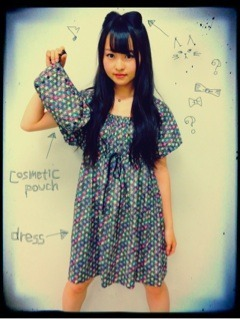

| 2012/06 16 Sat | 163回目*marika |
いつも読んでくださってる方、
初めて読んでくださった方、
コメントしてくださった方、
ありがとうございます‼
個別握手会in幕張メッセ
来てくださった方、
ありがとうございました。
すごく楽しかったー‼
初めての方がたくさん来てくださって
本当に感動してました

いつも来てくださる方も
もっと仲良くなれた気がする♪♪
終わったあと
嬉しくて泣きそうになった><
楽しい時間でした

みなさんに会えて
めっちゃめっちゃ元気になった‼
本当にありがとうございました‼
やっぱりにぎにぎ楽しい


......
今回のしーふく


びっくらしたでしょ

ママが作ってくれたワンピース。
そして実は化粧ポーチも
前から作ってくれてたんだー‼
ワンピースはこの生地が余ってたから
作ってくれたのです。
ポーチはスタッズいっぱい

ちなみに今日のネックレスも
スタッズで合わせてみた。
ワンピースとおそろいの
リバティーの生地で
柄かわいいのよね。星がいっぱい！
チカチカ
 笑
笑
笑
そんで今日のれいかの私服
めっちゃ好みだったー

かわいかったー

......
もうひとつ注目してほしいのは
初挑戦の髪型‼
いちおう、
テーマは猫ちゃんのつもりで
アイメイクはキャットラインを...
きゅいーんっっっ

したけども髪型に関しては
リボンだという意見が
多かった
 ちーん
ちーん
ちーん
んー...まぁどっちでも...
まりっか♪
では明日も元気に頑張りまりか！
おやすみなさい
まりか
コメント(204)
2012/06/16 23:24